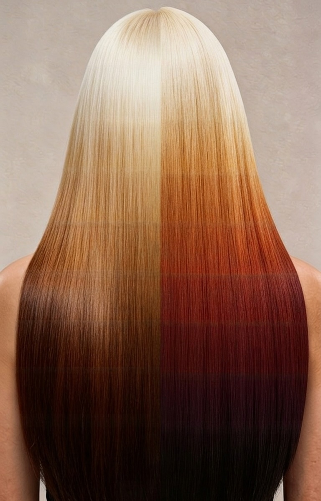

멜라닌 컬러 가이드
STEP 1
표시된 색감명은 참고용이며 실제와 다를 수 있습니다. 본 가이드는 정밀한 색감 재현이라기보다, 잔류 언더톤 · 보색중화 · 시술 방향의 이해를 돕기 위한 도구입니다.

한색 계열 퇴색모
난색 계열 퇴색모 / 자연모
시술 이력 선택
한색 계열 퇴색
쿨브라운 / 매트 / 노랑 퇴색
난색 계열 퇴색 / 자연모
붉은, 주황브라운 / 노랑 퇴색모
원하는 색감 선택
현재 상태
-
→
목표 색감
-
시술 가이드
← 색감 선택
시술 이력과 레벨을 선택하세요